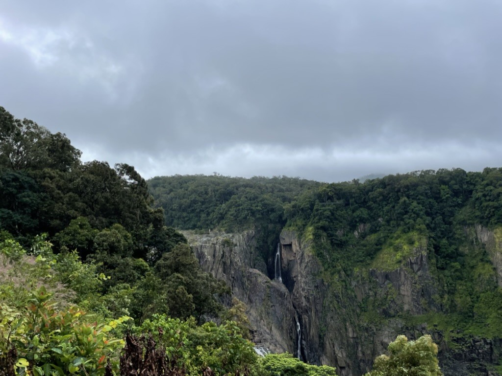
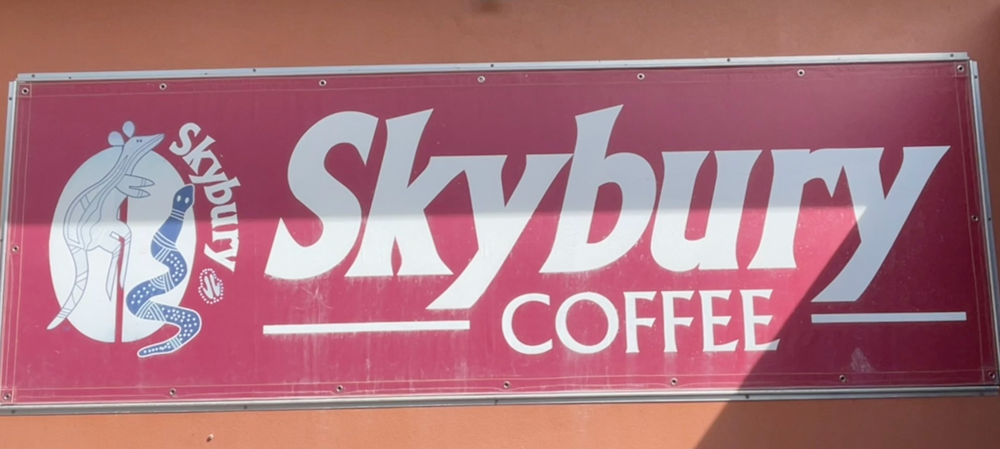
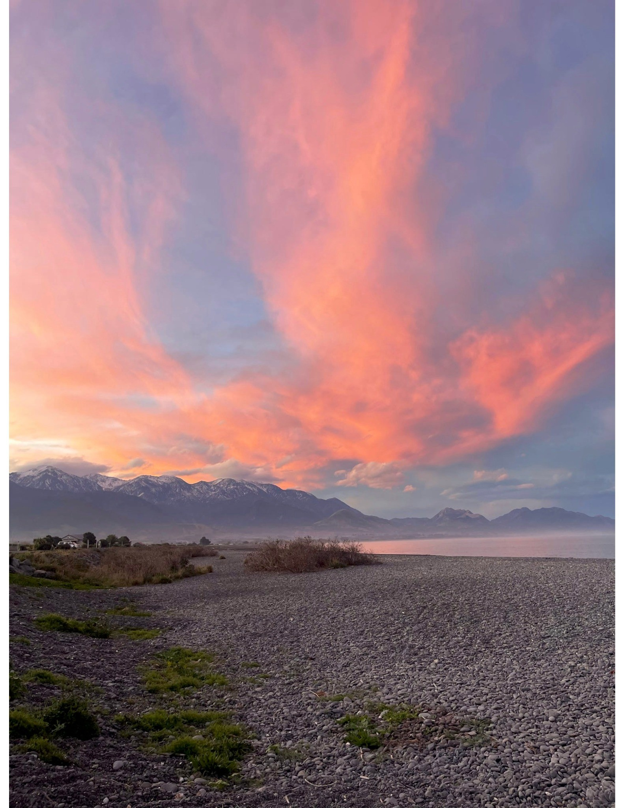
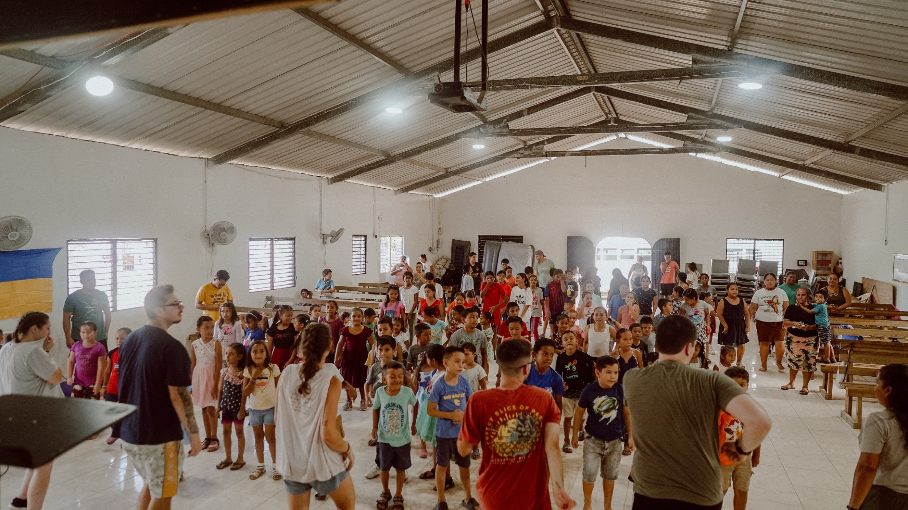
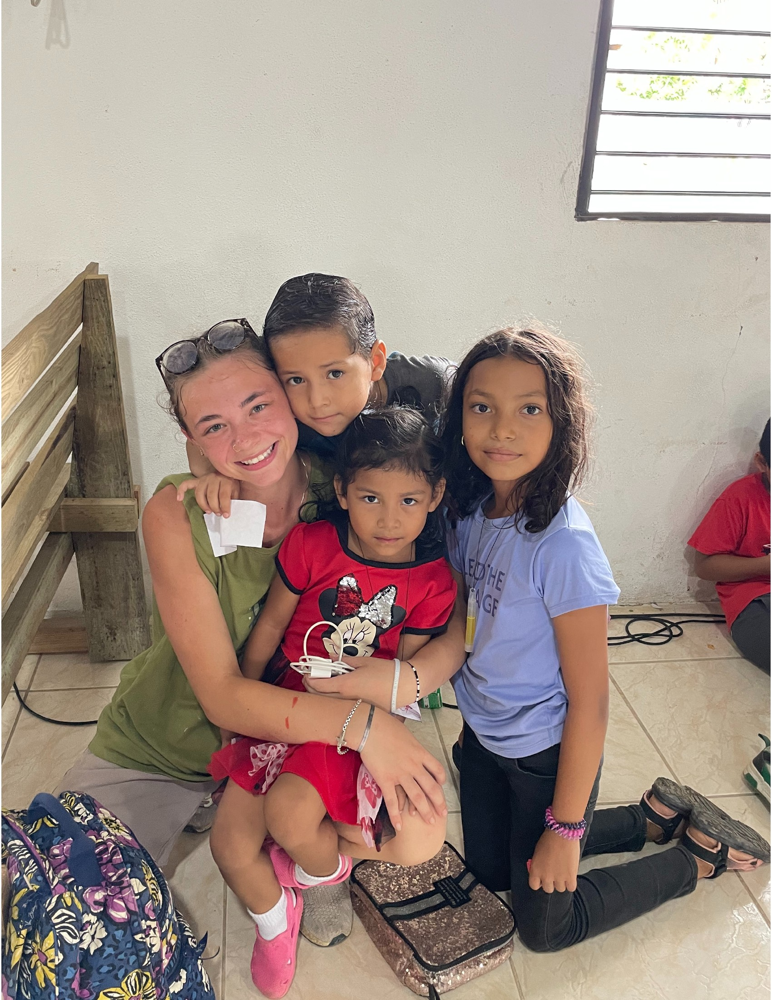

International Experience
Australia – Kuranda, Skybury & Snorkeling
During my Penn State Maymester in Australia, I had the privilege of visiting Kuranda, a village tucked within the world's oldest rainforest. The lush scenery and unique biodiversity offered an unforgettable lesson in environmental preservation and the fragile balance of tropical ecosystems.

Our group also visited Skybury Café, a sustainable coffee producer committed to net-zero operations. Touring their facilities offered insight into how environmentally-conscious agricultural practices can be woven into profitable business models.
One of the most unforgettable moments was snorkeling off the coast of Australia, where I saw coral restoration efforts up close and learned about the science behind marine conservation and reef resilience.
New Zealand – Sunset, Kathmandu HQ, and More
New Zealand offered an incredible mix of adventure and education. We visited Kathmandu’s headquarters to learn how sustainability is embedded into product design, sourcing, and long-term business strategy.
We also toured Parliament and the WikiHouse workshop, where we explored how modular building technology can support sustainable housing development across social, environmental, economic, and political pillars.
Belize – Bella Vista (Mission Trip)
 Through Praying Pelican Missions, I traveled to Bella Vista, Belize, where we partnered with a local log church to serve the surrounding community. Throughout the week, we hosted Vacation Bible School programs, distributed clothing, and prepared food packages for families in need. This experience shaped my understanding of community-led impact and reminded me how small acts of service can lead to lasting change.